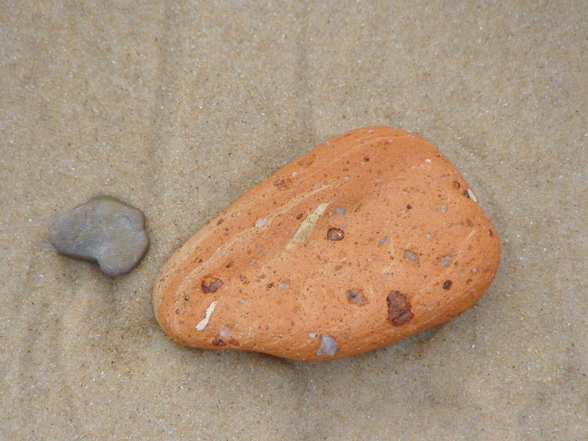

2跳目
店のこと
お店について確認できているのは、所在地とInstagramのアカウントだけです。
確認できていること
- 店名は「STONES BAKERY」、業種はベーカリー
- 所在地は和歌山県橋本市隅田町中島881(〒648-0017)
- 電話番号はなし。連絡はInstagramから
- 営業時間・定休日・メニュー・価格・ご予約・駐車場は準備中

想像してみる
石を選ぶように、パンを選ぶ時間
ここから先は制作側の想像で、お店の実際の様子・考え・商品とは関係がありません。
水切りの石は、河原でいくつか手に取って、平たいものを選ぶところから始まります。パンも、並んだものの中から選ぶ時間が楽しいものです。このお店でどんなパンが選べるのかは分かりませんが、まずはInstagramで雰囲気を見てみるのが近道です。


お店からの情報をいただければ、この「店のこと」ページにこだわりや歴史を書き足します。